Current focus
Black holes in dense star clusters
With Prof. Carl Rodriguez at UNC, I study black holes in dense star clusters such as globular clusters. In these clusters, frequent close encounters pair black holes up and drive them to merge. I am especially interested in clusters that host a massive black hole, such as an intermediate-mass black hole (IMBH), and in the range of mergers it produces:

-
Binary black hole mergers stellar-mass mergers, the sources detected by LIGO–Virgo–KAGRA
-
IMBH–BH mergers stellar-mass black holes merging with the cluster’s central massive black hole, usually by plunging in on a highly eccentric orbit
-
Extreme-mass-ratio inspirals (EMRIs) an interesting subset of IMBH–BH mergers, where a compact object slowly spirals in on a relatively circular orbit; a key source for LISA
A massive black hole at the center of a cluster, as we have seen in Omega Centauri, can change both the merger rate and the merger population for LIGO and LISA. Dense star clusters with massive black holes could even dominate the LISA EMRI rate.